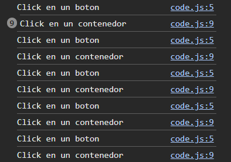
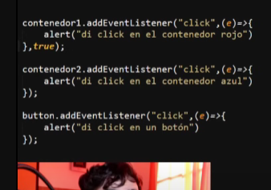

Flujo de eventos
Haz click sobre contenedores y botones
button.addEventListener("click", (e)=>{
console.log("Click en un boton")
});
contenedor.addEventListener("click", (e)=>{
console.log("Click en un contenedor azul");
},true);
rojo.addEventListener("click", (e)=>{
console.log("Click en un contenedor rojo");
},true);

El flujo de eventos por defectp es "bubling" hace que primero se ejecute el mas especifico (hijo)
Si le doy true al contenedor padre cambio el flujo a "capturing"
cambiamos el flujo de eventos agregando el parametro true al contenedor que contiene a al otro, si hay varios niveles, debemos poner true en todos menos el mas especifico
Detener propagación
button2.addEventListener("click", (e)=>{
console.log("Click en un boton");
e.stopPropagation();//detiene propagacion sobre el evento guardado en el parametro e
});
green.addEventListener("click", (e)=>{
console.log("Click en un contenedor verde");
});
black.addEventListener("click", (e)=>{
console.log("Click en un contenedor negro");
});